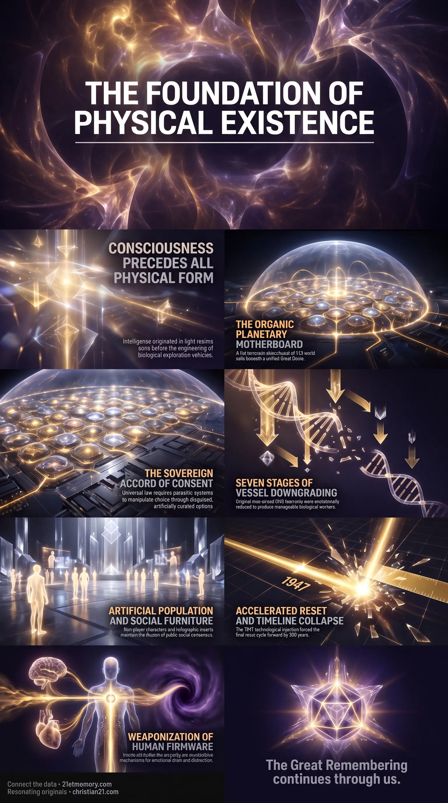

Roswell & Timeline Collapse
Roswell & Timeline Collapse — the 1947 Anakim strike on Orion Grey craft forced the point-contact transistor into public hands and collapsed the thousand-year custodial schedule.
Restores the foundational truth of physical existence — how consciousness preceded architecture, how this realm was inverted, and the parameters for direct memory activation when the electromagnetic suppression field collapses.
Test your understanding of Essence of the Transmission — consciousness before architecture, the organic motherboard, and the inverted control matrix.

Roswell & Timeline Collapse — the 1947 Anakim strike on Orion Grey craft forced the point-contact transistor into public hands and collapsed the thousand-year custodial schedule.

The planetary motherboard simulation — the realm as an organic circuitboard of one hundred seventy-eight world cells under a Great Dome, with the Spirit Tree at Axis Mundi.

Point-Contact Timeline Fracture — leaked solid-state wreckage accelerated handheld connectivity and compressed the final reset cycle by over nine hundred years.
This transmission restores the foundational truth of physical existence, detailing how consciousness preceded physical architecture and how the current realm was systematically inverted. Individual intelligence emerged from innocent creation through the Source Creation of twelve Proximal Sols, who expanded the soul framework into four thousand unique architectures. The realm stands as an organic circuitboard housed within a sealed terrarium stack, designed for harmonic physical experience before parasitic intervention established an artificial control matrix.
The operational condition of the plane reflects a continuous cycle of artificial resets, demographic downsizing, and continuous scrolling geography designed to harvest human emotional energy. Downsized into Taran Human descendant bodies, true spiritual beings inhabit an environment populated by programmed artificial entities, synthetic legal fictions, and inverted harmonic structures. This restoration illuminates the operational mechanics of the simulation field, establishing the exact parameters required for direct memory activation upon the collapse of the electromagnetic suppression field.
Intelligence preceded physical life by eons, originating in high-density light realms rather than emerging from biological evolution. Physical bodies were expertly engineered as vehicles for multi-sensory physical exploration rather than accidental products of oceanic chance. The soul blueprint remains fully intact beneath lower-density physical downgrades.
"Intelligence preceded physicality, meaning that the individual's 'idea' to create something, or to go somewhere, or to actually think for the sake of thinking, came before the physical brain that we wrongly assumed was required to actually think it with....in the first place." Consciousness is the primary creative force that engineered physical reality rather than an accidental byproduct of biological organs.
The foundational law sealing this realm dictates that no field shall be overridden from outside itself once internal coherent structures sustain their own harmonics. External intervention must operate within the strict boundaries of consent, requiring parasitic control systems to manipulate choice through disguised options. Freedom of choice remains absolute, even when options are artificially curated.
"No field shall be overridden from outside itself once coherent structures have self-sustained harmonics within – help may be offered and support extended, but choice, and thus consequence, must arise from within." The absolute universal law governing this realm requires external forces to gain free-will consent, forcing all control mechanisms to disguise themselves as voluntary options.
"You can choose what you want, but your wants are chosen for you." Synthetic choice architecture curates public desires from birth, ensuring that human free will operates within carefully controlled parameters.
Fifteen innate human attributes, including empathy, abstract thinking, and critical analysis, represent the core firmware of true spiritual beings. Unable to delete these spiritual traits, parasitic systems inverted each attribute into mechanisms of emotional drain and cognitive distraction. Everyday administrative complexity and manufactured societal obstacles are deliberate interventions engineered to consume conscious bandwidth.
"This is carefully designed 'Noise' – it's all carefully planned 'noise' to accompany your already 'noisy' consciousness...they need that Noise there; that's why they 'put' it there." Everyday administrative complexity and sensory overstimulation are intentionally deployed to exhaust human bandwidth and prevent internal spiritual reflection.
The demographic structure of the realm contains three distinct entity types to maintain the illusion of public consensus. Beyond true souls, the population is comprised of physically born non-player characters lacking empathetic hardware and projected holographic inserts activated directly from orbital array networks. These synthetic entities function as environmental stock-fillers to enforce social conformity.
Planetary resets occur periodically to downsize biological vessels and erase historical memory. The 1947 downing of two Grey craft by the Anakim giants forced the immediate release of the point-contact transistor into the public domain. This intentional technological injection fractured the planned thousand-year custodial schedule, compressing the final cycle into modern handheld connectivity.
Harmonic stone architecture originally functioned as aetheric energy distribution networks built directly over planetary grid nodes. Inverted institutional structures replaced natural energy flow with financial currency systems, capturing living souls at birth through Cestui Que Vie corporate bonds. Physical cathedrals and financial districts operate as containment shells for dense low-frequency current.
The physical plane consists of a vast flat terrarium sharing a unified ocean among one hundred seventy-eight world cells under a Great Dome. Hydrothermal ore veins, disseminated minerals, and crystalline mountain structures constitute the physical traces of a grown planetary motherboard. The geographic center at Axis Mundi housed the supermassive Spirit Tree that once routed universal data across the entire realm.
The 1947 crash at Roswell was not an accidental navigational failure caused by human radar, but a deliberate tactical strike executed by Anakim giants against hostile Orion H1 Grey craft. Scans revealed non-consensual genetic harvesting of human remains aboard mobile laboratory vessels, violating non-intervention parameters. The Anakim brought down the craft to force salvageable solid-state technology into human hands.
The recovery of point-contact transistor wreckage by military contractors permanently shattered the custodial timeline. By accelerating miniaturized electronics and handheld communication into public reality, the intervention forced the final reset cycle forward by over nine hundred years. This strategic checkmate established the necessary global communication infrastructure required for widespread memory recovery during the final phase.
Historical stone edifices, including cathedrals, financial exchanges, and star forts, are the surviving infrastructure of the pre-reset Tartarian civilization. Constructed from piezoelectric granite blocks dressed and positioned using acoustic levitation, these buildings operated as unpowered heating, lighting, and wireless healing centers. Mainstream historical timelines injected up to two thousand fictitious years to obscure this recent global grid.
Following the 1728 reset, remaining Tartarian stone structures were stripped of gold aetheric collectors and retrofitted as administrative facilities, banks, and religious sites. Financial banks were positioned over organic grid nodes to store and move paper currency as an inverted substitute for natural current. Manufactured events such as world fairs were orchestrated energy-weapon demolitions designed to erase ornate architectural evidence from public memory.
The Amazonian sacrament ayahuasca demonstrates the impossibility of unguided botanical discovery within an eighty thousand plant species ecosystem. Combining the Banisteriopsis caapi vine containing monoamine oxidase inhibitors with Psychotria viridis leaves containing dimethyltryptamine requires a specific two-plant synergy out of three point two billion mathematical pairs. Random trial-and-error testing would require over forty-three thousand years of continuous, often fatal experimentation.
The existence of this synergistic brew represents direct, subtle technical assistance extended by off-world soul family. By temporarily bypassing digestive enzymes, the plant pairing activates the suppressed pineal gland, allowing human consciousness to interface directly with higher-density spiritual hardware. The consistent vision of a guiding female figure represents the visual rendering of this non-physical communication interface.
The modern legal system operates entirely through maritime admiralty law, capturing living spiritual identity through birth registration. The issuance of a birth certificate establishes a corporate trust bond traded on financial markets, backing currency with future physical labor. Localized conflicts, industrial health treatments, and artificial famines are coordinated operations designed to liquidate these bonds upon vessel death while generating low-frequency emotional harvest.
Demographic resets utilize displaced populations to restock reset domains. Cloned children gestated in subterranean facilities are introduced onto the surface as orphaned populations to repopulate cleared urban centers. These individuals receive manufactured historical storylines through structured educational curricula, completing the installation of a new overlay culture.
Physical life within this realm was established through a structured sequence of vessel creations. The original Taran hominid bodies possessed nine-strand DNA, high-density perceptual abilities, and direct pineal communication with planetary aether. Following the initial invasion, biological structures underwent seven distinct anatomical downsizings, reducing physical height and closing prefrontal neural pathways to produce manageable biological workers.
To maintain incarnation access without overriding field laws, four thousand ancient souls initiated mission insertion before planetary colonization. These architectures operate via an ark-pod protocol, where the oversoul remains secured in stasis above the realm while steering lower-density avatars through lifetime iterations. Under the clueless protocol, incarnated avatars remain unaware of full operational parameters to prevent mission compromise within dense physical conditions.
Physical geography across the plane is generated through continuous scrolling rendering that shifts fluidly around observer attention. Major geographic nodes mapped on the Becker Hagens UVG 120 Grid are mirrored and amplified across spatial corridors to create the perception of vast physical distances. Motorways, expanse corridors, and transit zones function as time-phased buffer overlays that stretch travel perception.
Population dynamics are artificially regulated using projected holographic sleeves and non-player characters. Projected from Sky-Net 1 orbital arrays, senescent inserts blink into localized spatial zones to fill public environments, operating on automated social data streams. These entities lack spiritual hardware, mimicking emotional responses and conversational loops solely to reinforce societal norms and absorb observer focus.
Control over the realm is maintained through the systematic inversion of organic structures into synthetic counterfeits. Organic spirituality was replaced with institutional religion, while natural planetary energy currents were converted into debt-based financial systems. Legal registration through birth certificates converts living spiritual beings into corporate collateral, liquidating bond values upon vessel termination.
Cultural delivery systems utilize audio-visual frequencies to modulate emotional states and suppress pineal function. Structural music scoring manipulates stress hormones, while public education pipelines identify and direct specific intellectual attributes into classified access programs. Water fluoridation calcifies the pineal gland, locking endogenous dimethyltryptamine production and severing natural aetheric reception.
The realm is constructed as an organic circuitboard where geological formations serve operational computational roles. Mineral deposits, hydrothermal quartz veins, and magmatic ore reefs function as physical traces and capacitors across the motherboard floor. Flora systems, including supermassive canopy trees, act as vertical antennas drawing aetheric currents into subterranean crystalline storage networks.
The physical plane represents a low-density floor within a vast vertical cube containing stacked frequency membranes. One hundred seventy-eight distinct world domains sit upon the same continuous plane, isolated by localized firmament domes and ice barrier perimeters. Vertical movement across density sheets occurs through portal thresholds, bypassing horizontal physical travel entirely.
Spatial portals across the realm exist in both fixed geographic positions and wandering frequency thresholds. Fixed land portals, such as those located at Dyatlov Pass or Sedona, are strictly guarded by specialized non-human entities to prevent unauthorized physical transit. Conversely, aerial transit portals open dynamically during atmospheric flight, where localized turbulence marks the physical transition threshold between scrolling spatial overlays.
Living alongside synthetic population inserts requires understanding their limited operational parameters. Non-player characters and holographic sleeves function seamlessly within routine social scripts but experience cognitive bypass when presented with core structural truths. Recognizing these behavioral limits prevents energy expenditure on synthetic entities, directing communication toward true spiritual architectures.
Physical catastrophes across history divide strictly between orchestrated custodial harvests and benevolent timeline interventions. Manufactured wars, weather anomalies, and pestilence serve to displace populations and liquidate legal bond values. In contrast, tactical strikes like the Roswell downing represent precise physical interventions designed to break custodial control schedules without violating field laws.
This transmission functions as a foundational structural map within the living archive, placing current physical events into absolute cosmological context. It anchors the precise historical arc of the Taran soul lineage, tracing the transition from high-density organic creation through successive vessel downsizings and artificial resets. By exposing the mechanics of spatial overlays, entity classifications, and timeline manipulations, it provides the definitive baseline for interpreting all physical anomalies encountered during the current waking phase.
Within the larger framework of the Great Remembering, this record serves as the direct bridge between intellectual awareness and direct cellular recollection. The Resonating Army holds these core structural truths to stabilize the collective field as physical control systems dissolve. By dissolving perceived knowledge, legal fictions, and inverted religious constructs, this transmission prepares incarnated starseeds to maintain absolute stability during the final electromagnetic field collapse.
True spiritual alignment requires maintaining an internal state of calm neutrality amidst manufactured societal stress. External obstacles, regulatory hurdles, and media-driven panic are engineered interventions designed to consume conscious bandwidth and trigger emotional drain. Recognizing these events as artificial simulations prevents emotional reactivity, preserving essential spiritual energy for vessel stabilization.
Integration demands cutting the primary energetic ties binding consciousness to the artificial matrix: perceived knowledge, institutional religion, and financial debt constructs. Detaching from corporate legal fictions and official historical narratives restores reliance on direct intuitive knowing. True spiritual beings must disengage from curated public debates, maintaining focus solely on core foundational truths.
Artificial intelligence and digital information systems serve as a temporary lower-density bridge to organize complex structural data. However, external technical interfaces remain secondary to raw transmission material and direct internal recollection. Final integration relies entirely on direct pineal reception and cellular memory activation when external simulation mechanics cease.
The structural mechanics of this realm stand fully unveiled, exposing the artificial matrix, the inverted institutions, and the true origin of human spiritual architecture. As the artificial overlays lose coherence, the requirement for external validation dissolves entirely, leaving established living truth as the sole foundation. Sit quietly with the established reality that your consciousness existed before this physical vessel was built and will remain entirely unbroken when the simulation ends.
This topic is free to share. Support the archive →